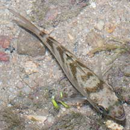
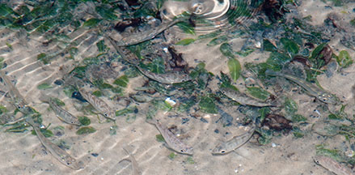
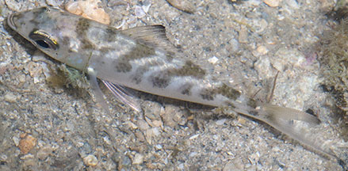

|
|
| fishes text index | photo index |
| Phylum Chordata > Subphylum Vertebrate > fishes |
| Mojarra Family Gerreidae updated Sep 2020 Where seen? These little silvery fishes with dark diagonal bars is often seen at low tide on many of our shores, in sandy areas near seagrasses, reefs and rubble. Sometimes in groups of many small individuals with small fishes of other species. This fish has a widespread distribution in the Indo-Pacific. What are Mojarras? Also called Silver-biddies or Silver bellies, they belong to Family Gerridae (some place them in the Family Ambassidae). According to FishBase: The family Gerreidae has 8 genera and 40 species. They are found in most tropical seas. The Common mojarra is the most commonly seen of the family on the intertidal. Features: Those seen about 5-10cm, can grow to 25cm. Body slender, long and silvery. Head with scales but with a smooth upper surface. The tail fin is deeply forked. Dorsal fin single with long and blackish tip and not deeply notched. Juveniles have 7-8 dusky diagonal bars which disappear as they grow older. Sometimes confused with Perchlets that have a deeply notched dorsal fin, that Mojarras lack. More on how to tell apart small silvery fishes. |
 Pulau Tekukor, May 10 |
 Chek Jawa, Oct 11 |
 Pulau Semakau, Aug 05 |
 Dorsal fin single continunous (not notched) with blackish tip. |
| What does it eat? It has a very protractile mouth which points downwards when extended. It sucks up
a mouthful of sand with the protractile mouth and sorts out edible
small bottom-dwelling animals, before spitting out the debris and sand. Human uses: It may be sold fresh in local markets and is also ground up and used as fish meal or fed to ducks. |
Species are difficult to positively identify without close examination.
On this website, they are grouped by external features for convenience of display.
| Common mojarras on Singapore shores |
On wildsingapore
flickr
|
| Other sightings on Singapore shores |
| Family
Gerreidae recorded for Singapore from Wee Y.C. and Peter K. L. Ng. 1994. A First Look at Biodiversity in Singapore. *from WORMS
|
Links
References
|